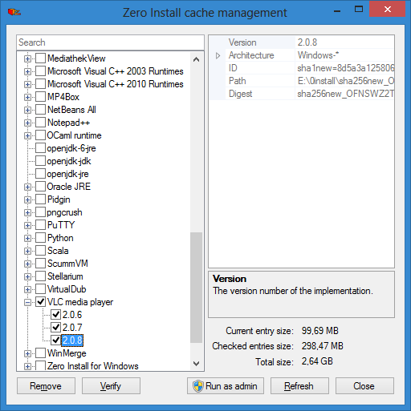

The Cache
Everything 0install downloads from the net by default goes in ~/.cache/0install.net/ on Linux or %localappdata\0install.net on Windows (see File locations). Every application/library unpacks into a directory in that cache. So, there's one directory for ROX-Filer, and another for ClanBomber, etc. In fact, there's one directory for every version of ROX-Filer, in case you want more than one available. Every directory is uniquely named, so you'll never get conflicts when trying to install two different programs.
The idea is that you don't need to backup ~/.cache, because you can always download the stuff again. For example, if you delete the whole ~/.cache/0install.net/ directory and then click on ROX-Filer, it will just prompt you to download it again. The cache is just to make things faster (and work when offline), but you don't really need to worry about it.
Sharing Implementations
Between users of the same system
0install can be configured to store its cache in /var/cache/0install.net/ on Linux or C:\ProgramData\0install.net on Windows. This allows sharing between users. The use of cryptographic digests makes this safe; users don't need to trust each other not to put malicious code in the shared cache.
Between virtual machines
You can also share the cache between virtual machines:
Between machines using P2P
Note: this is still experimental
Using 0share you can locally distribute your implementations (versions of programs) via a peer-to-peer protocol.
Removing Implementations
If for some reason you would like to remove implementations from the cache (it does not make your system any 'cleaner', but it does free some disk space), you can do so using the Zero Install Cache dialog.
On Linux, click on the Show Cache button in the Manage Programs box to get the cache explorer (or run 0install store manage). Select the versions you don't need anymore and click on Delete.

On Windows open the main GUI of Zero Install and click on Tools and Cache management (or run 0install store manage). Select the versions you don't need anymore and click on Remove.

Note: you can delete the entire cache, 0install will redownload whatever it needs later.